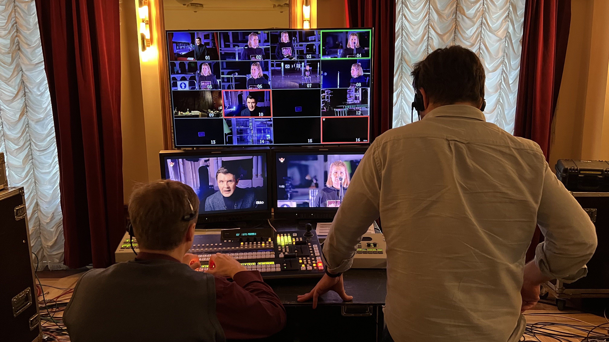
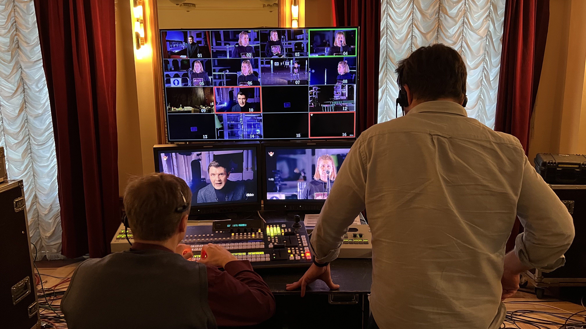

Это ART vision
Независимое творческое объединение artVision group - опытная и высокопрофессиональная команда, объединившая лучших российских специалистов в области телевизионных и кино трансляций театральных и концертных событий. Наша творческая бригада владеет уникальными для российского пространства технологиями съёмки и постпродакшн, что делает нашу продукцию конкурентоспособной на мировом рынке. В том или ином составе сотрудники нашей команды имели опыт работы с такими ведущими европейскими производителями в данной индустрии, как - BelAir Media (Франция) , Telmondis (Франция) - EuroArts (Германия), Unitel (Германия), Accentus Music (Германия), RAI (Италия). Наши сотрудники проходили стажировку в составе съемочных групп ВВС (Великобритания).
Весь накопленный опыт сотрудничества с мировыми компаниями и платформами мы стараемся применить в нашем аудиовизуальном культурном пространстве. Все наши сотрудники имеют большой опыт в создании телеверсий концертов; балетных, оперных и драматических спектаклей; конкурсных и фестивальных церемоний и других мероприятий в сфере культуры для российских и зарубежных телеканалов.
artVision group владеет уникальными для российского аудиовидеопроизводства технологиями съёмки и постпродакшн, что делает нашу продукцию высококачественной и конкурентоспособной по мировым критериям, что охотно признают и все наши партнёры. Среди международных платформ – это ARTE, mediciTV, Mezzo, на отечественном поле такие медиа пректы, как TheatrHD и «Золотая Маска» on line.
Наша команда способна решить любую художественную задачу. Результатом станет не просто видеозапись концерта, а авторское произведение, созданное в соответствии с замыслом композитора или драматурга, с оригинальными режиссерскими решениями и безукоризненной операторской работой.